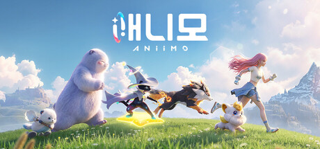
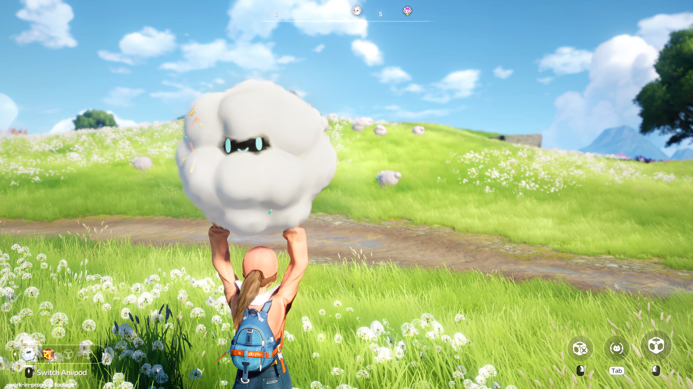

애니모 출시일 총정리 PC콘솔 9월16일 모바일 9월23일 플랫폼 가격 사양
여러분, '애니모 출시일 대체 언제야' 하고 검색하다 이 글까지 들어오신 분들 꽤 많으실 것 같아요. 저도 어젯밤부터 커뮤니티가 시끌시끌하길래 공식 뉴스센터랑 스팀 페이지를 하나하나 뒤져서 오늘(9월 5일) 기준으로 다시 정리해봤답니다.
결론부터 말씀드리면 이래요. PC·콘솔(PS5, Xbox Series X|S)·클라우드 게이밍은 2026년 9월 16일, 모바일(iOS·안드로이드)은 2026년 9월 23일에 전 세계 동시 출시입니다. 두 날짜 다 공식 공지에 확정으로 박혀 있는 값이라 더 헷갈리실 필요는 없을 것 같아요.

애니모 공식 키비주얼이에요, 저 캐릭터랑 애니모들이 이번 출시로 드디어 정식 서비스에 들어갑니다.
이미지: 스팀 스토어 페이지
애니모 출시일, 결국 언제인 거예요?
애니모 정식 출시일은 플랫폼별로 딱 일주일 차이가 나는데요, PC·콘솔·클라우드 게이밍이 9월 16일로 먼저 열리고 모바일이 9월 23일로 뒤따라옵니다.
이 값은 8월 26일 공식 뉴스센터 공지, 그리고 9월 3일에 개발팀이 올린 편지에서 한 번 더 못박은 거라 신뢰도는 높은 편이에요. 스토어별로 표로 정리하면 이렇습니다.
| 플랫폼 | 스토어 | 정식 출시일 |
|---|---|---|
| PC | 스팀(앱ID 4126040) | 2026.09.16 |
| PC | 에픽게임즈 스토어 | 2026.09.16 |
| 콘솔(PS5) | PS 스토어 | 2026.09.16 |
| 콘솔(Xbox Series X|S · Xbox PC) | Xbox 스토어 | 2026.09.16 |
| 클라우드 게이밍 | 서비스명 미공개 | 2026.09.16 |
| 모바일(안드로이드) | 구글 플레이 | 2026.09.23 |
| 모바일(iOS) | 앱스토어 | 2026.09.23 |
여섯 개 스토어 전부 같은 날짜로 맞춰져 있어서 국가별로 먼저 열리고 나중에 열리는 시차 같은 건 없다고 보시면 되고요, 표에 있는 것처럼 클라우드 게이밍만 정확한 서비스 이름이 아직 공개 전이라 그건 나오는 대로 채워 넣을게요.
플랫폼이 여섯 곳인데, 그럼 같이 즐길 수 있는 거예요?
네, 애니모는 여섯 개 스토어를 크로스 플랫폼 멀티플레이로 묶어놓은 게임이라 PC로 하다가 폰으로 이어서 접속해도 같은 친구들을 그대로 만날 수 있어요.
- 국제 서버는 3구역으로 나뉘어요 — Aniimo-Americas · Aniimo-Europe · Aniimo-Apac
- 자막은 한국어 포함 13개 언어를 지원하고요
- 음성(더빙)은 영어·중국어 간체·일본어·한국어, 이렇게 네 개 국어로 나와요(베트남어는 자막만 지원돼요)
자막이랑 음성 둘 다 한국어가 들어가 있어서, 메인 스토리 진행할 때 답답할 일은 없겠네요.

애니모 무리와 함께 필드를 누비는 탐험 장면이에요. 혼자서도 이렇게 든든하게 몰려다닐 수 있다는 게 은근히 매력적이더라고요.
이미지: 스팀 스토어 페이지
게임값은 얼마나 하나요? 콘솔 사전구매는요?
애니모 본편은 무료 플레이(F2P)고, 본편에 앱 내 구입이 곁들여지는 구조예요.
무과금으로 시작하는 데는 전혀 문제가 없고요, 다만 콘솔(PS·Xbox) 쪽엔 사전구매 팩이 따로 준비돼 있는데요, 게임포커스·게임톡 등 국내 매체가 게임스컴 현장 소식으로 전한 바로는 구매 시 한정 혜택이랑 전용 스킨을 받을 수 있다고 해요. 다만 이건 공식 뉴스센터·스팀에 아직 정식 공지된 내용은 아니라서, 팩 구성이나 가격은 스토어 페이지가 열리는 대로 다시 확인해서 챙겨볼게요.

본편이 무료다 보니 일단 부담 없이 들어가서 이런 애니모들부터 하나씩 만나보면 될 것 같아요.
이미지: 스팀 스토어 페이지
이 출시일 소식이랑 게임 정체는 어디서 나온 거예요?
이번 출시일은 지난 8월 26일 독일 쾰른에서 열린 게임스컴에서 처음 공개됐어요. 그 자리에서 '출시 일정 공개 PV'라는 트레일러가 같이 풀리면서 두 날짜가 확정으로 못박혔죠.
게임 자체는 공식 소개문에서 '멀티플레이 오픈월드 몬스터 포획 RPG'라고 스스로를 규정하고 있고요, 이용 등급은 전체 이용가로 나와 있어서 연령 걱정 없이 접근하기 좋다는 점도 참고하시면 좋겠어요.
여기서 계속 나오는 '트와인'이라는 말이 낯설 수 있는데, 애니모랑 마음을 트고 이어져서 서로의 능력을 함께 쓰는 핵심 시스템을 가리키는 공식 용어예요. 이 게임을 관통하는 대표 키워드라고 보시면 됩니다.

애니모를 붙잡고 이렇게 교감하는 장면이 이 게임 트레일러에서 계속 반복되는 그림이에요. 저는 이 장면 볼 때마다 괜히 마음이 몽글몽글해지더라고요, 트와인이 왜 이 게임 대표 키워드가 됐는지 알 것 같아요.
이미지: 스팀 스토어 페이지
그래서 정식 확정 PC 사양은 어느 정도예요?
정식 확정 사양 기준으로 보면 최소는 라이젠5 3600X급, 권장은 라이젠7 7700X급 정도를 잡으면 됩니다.
여기서 한 가지 짚어드릴 게, 이 표는 스팀 페이지에 새로 올라온 정식 버전 사양이에요. 예전 CBT 돌 때 권장 사양 체크하던 글이랑은 값이 다를 수 있으니 헷갈리지 마시고, 아래 표를 최신 기준으로 봐주시면 됩니다.
| 구분 | 운영체제 | CPU | 메모리 | 그래픽카드 | 기타 |
|---|---|---|---|---|---|
| 최소 | Windows 10 | i7-9700 / 라이젠5 3600X | 12GB | GTX 1060 / RX 6600 | DirectX 11 · 저장공간 45GB · 초고속 인터넷 필요 |
| 권장 | Windows 10 이상 | i7-12700F / 라이젠7 7700X | 16GB | RTX 3070 8G / RX 6800 | DirectX 11 · 저장공간 45GB |
사전예약이랑 베타 테스트는 어떻게 됐대요?
이 정도 화제작이다 보니 사전예약 반응도 심상치 않아요. 8월 26일 게임스컴 발표 기준으로 글로벌 사전예약이 2,800만을 넘겼다는 소식이 경향게임스·게임포커스·게임톡·베타뉴스 등 국내 매체를 통해 교차로 확인됐거든요. 다만 보상 단계나 구체적으로 뭘 주는지는 이 글 쓰는 시점까지 공식적으로 안 나와서, 이 부분은 나오는 대로 다시 챙겨서 알려드릴게요.
출시 전에 테스트도 한 차례 있었는데요, 2차 베타 테스트가 2026년 7월 9일부터 25일까지 한정 인원 대상으로 비과금·데이터 초기화 조건으로 진행됐었어요. 이때 참여했던 분들한테는 '인연의 약속'이라는 혜택이 있는데, 공식이 말하는 오픈 테스트(정식 공개 테스트) 단계가 되면 베타 때 쓰던 계정 그대로 접속해서 애니모 1마리를 다시 받을 수 있는 방식이라고 하네요(다만 정확한 시점은 아직 공식 미공개예요). 아래 스크린샷으로 전투 연출도 한번 같이 보여드릴게요.
전투 붙으면 이렇게 화려하게 그려지는데, 사전예약이 2,800만을 넘긴 이유가 있겠다 싶은 장면이에요.
이미지: 스팀 스토어 페이지
자주 묻는 질문
Q. 정식 버전, 베타 테스트 때랑 똑같이 나오는 거예요?
아니요, 꽤 달라져요. 개발팀이 9월 3일 편지에서 밝힌 내용만 봐도 전설 애니모(아이리스테일) 포획 방식이 오픈월드·스토리 기반으로 재설계됐고, 육성 부담을 줄이는 쪽으로 잠재력·룬 시스템도 손봤다고 하니 베타 기억만 믿고 들어가면 낯설 수 있어요.
Q. 사전예약하면 뭘 주나요?
보상 단계나 구성품은 이 글 쓰는 시점(9월 5일)까지 공식적으로 세부 내용이 나오지 않았어요. 확정되면 그때 다시 정리해서 알려드릴게요.
애니모 출시일 정리
정리하면, PC·콘솔·클라우드 게이밍은 9월 16일, 모바일은 9월 23일 전 세계 동시 출시고요, 본편은 무료에 앱 내 구입이 곁들여지는 구조입니다. 여섯 개 스토어가 크로스 플랫폼으로 묶여 있고 한국어 자막·음성도 다 들어가 있으니, 사전 다운로드 날짜만 잘 챙겨두시면 될 것 같네요.
✔ 애니모 같이 보기 좋은 내용
· 애니모 인게임 플레이 트레일러 공개, CBT 테스트 권장 사양 체크, 온라인게임추천
참고한 곳
· 애니모 공식 뉴스센터 — 출시일 공지(8/26)
· 애니모 공식 뉴스센터 — 개발팀의 편지(9/3)
· 애니모 스팀 스토어 페이지